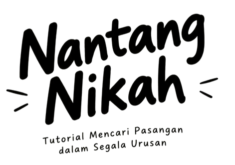

Sekedar Info
Buku yang sedang kamu baca ini adalah catatan perjalanan keluarga kami yang belum selesai. Kami bukan keluarga sempurna. Sering salah, sering ragu, tetapi kami ingin melakukan sesuatu yang lebih baik dari yang kami warisi. Buku ini kami tulis sebagai bahan obrolan bagi siapa saja yang sedang menimbang jalan serupa.
Buku ini salah satu dari seri sekolah mandiri berikut ini:

Nantang Nikah: Tutorial Mencari Pasangan dalam Segala Urusan
Buku ini membahas tema yang paling sering disalahpahami dalam homeschooling, yaitu sosialisasi. Pergaulan bukan soal berapa banyaknya teman, melainkan sebagai kecakapan berpasangan: cara membaca orang, menyampaikan keinginan, menolak dengan sopan, dan bertahan ketika hubungan sedang tidak nyaman. Pasangan di sini bisa siapa saja yang sedang kita ajak bekerja, bermain, atau berbagi ruang, sehingga hampir semua urusan hidup pada dasarnya adalah urusan mengelola pasangan.

Bimbingan Bolos: Tutorial Melanggar Aturan Biar Semua Senang
Review ringkas.

Ludens: Tutorial Menyelesaikan Masalah Tanpa Menyelesaikannya
Review ringkas.

Mindfulfest: Tutorial Pundit Pikiran dan Perasaan
Review ringkas.

Iman di Persimpangan: Bagaimana Melacak Apa yang Kamu Yakini Benar
Review ringkas.

Cinta Cuan: Miskin Bolek, Bodoh Jangan!
Review ringkas.

Kitab Ketawa: Kuli Tragedi Jadi Komedi
Review ringkas.

Batih Bumi
Review ringkas.
Cara Baca
sekalian DISKLAIMER
-
Mulai dari bagian Syarat, lalu Siasat, lalu Skala. Kamu juga boleh langsung melompat ke bagian yang paling sedang kamu pikirkan, karena setiap bagian bisa dibaca berdiri sendiri.
-
Tidak perlu. Baca satu halaman, renungkan, lalu lanjutkan saat kamu sudah siap. Buku ini lebih berguna sebagai bahan obrolan daripada bacaan yang harus dikejar sampai selesai.
-
Tekan "Jadi ..." untuk membuka ceklis di setiap halaman, lalu beri bintang 1 sampai 5 sesuai kenyataan dirimu saat ini. Klik bintang yang sama dua kali untuk menghapus nilainya. Jujur pada diri sendiri jauh lebih berguna daripada nilai yang tinggi.
-
Persentase menunjukkan seberapa siap kamu di setiap bagian dan secara keseluruhan. Angkanya dihitung dari bintang yang sudah kamu isi. Bagian yang masih rendah bisa menjadi daftar hal yang perlu kamu perbaiki.
-
Boleh, bahkan dianjurkan. Buku ini ditulis sebagai bahan obrolan. Kamu bisa membaca sendiri lalu membahas hasilnya bersama orang yang kamu percaya, tanpa harus mengikuti jawaban orang lain.
Dari Total Poinmu,
Kamu 0% siap nikah!
Syarat
A. Mengapa mesti dewasa?
B. Apa Itu Dewasa?
C. Adegan Dewasa?
OTW
Halaman ini masih dalam tahap produksi. Isinya sedang kami siapkan, jadi mohon bersabar ya.
Terima kasihDewasa dulu lah!
Menikah itu soal kesiapan menanggung pilihan, bukan soal usia. Sebelum menghitung syarat lain, pastikan dulu kamu paham apa artinya dewasa.
- ± 8 menit baca
Menikah bukan garis finis
Banyak orang membayangkan menikah sebagai tujuan akhir: setelah akad atau pemberkatan selesai, urusan hidup terasa tuntas. Kenyataannya, menikah justru awal dari urusan yang lebih panjang. Ada rumah yang harus diurus, uang yang harus diatur, keluarga yang bertambah, dan keputusan yang kini ditanggung berdua.
Karena itu pertanyaan pertama bukan "dengan siapa", melainkan "sudah siapkah aku". Pertanyaan itu terdengar keras, padahal justru melindungimu. Orang yang siap bisa menghadapi masalah dengan kepala dingin. Orang yang belum siap sering memindahkan masalahnya ke pasangan.
Usia dan kedewasaan tidak selalu sejalan
Ada orang berusia dua puluhan yang sudah terbiasa menanggung akibat dari pilihannya. Ada pula yang berusia tiga puluhan tetapi masih menghindar setiap kali keadaan tidak enak. Angka usia hanya memberi tahu berapa lama kamu hidup, bukan seberapa banyak kamu belajar dari hidup itu.
Dewasa bukan soal sudah berapa lama kamu hidup, tetapi soal seberapa sanggup kamu menanggung pilihanmu sendiri.
Apa yang sebenarnya berubah setelah menikah
Supaya tidak kaget, bayangkan dulu hal-hal yang akan berubah. Daftar ini tidak dimaksudkan untuk menakut-nakuti, hanya mengajakmu melihat gambaran utuh.
- Keputusan menjadi urusan berdua. Mau pindah kerja, membeli barang besar, atau mengunjungi keluarga, semuanya perlu dibicarakan lebih dulu.
- Kebiasaan pribadi terlihat jelas. Cara tidur, makan, mengatur barang, dan marah tidak bisa lagi disembunyikan.
- Keluarga bertambah. Kamu tidak hanya menikah dengan satu orang, tetapi juga masuk ke lingkaran keluarganya.
- Uang tidak lagi hanya milikmu. Pengeluaran, tabungan, dan utang menjadi tanggung jawab bersama.
- Kamu tidak bisa sekadar pergi. Saat hubungan sulit, jalan keluarnya adalah menyelesaikan, bukan menghilang.
Dari lima hal itu, mana yang paling membuatmu ragu? Bagian yang paling membuatmu ragu biasanya menunjuk kebiasaan yang perlu kamu latih lebih dulu.
Tiga tanda kamu mulai dewasa
Tidak ada ujian resmi untuk menjadi dewasa, tetapi ada beberapa tanda yang bisa kamu amati dari dirimu sendiri.
- Apakah aku mengakui kesalahanku tanpa mencari kambing hitam?
- Apakah aku menyelesaikan kewajibanku walaupun tidak ada yang mengawasi?
- Apakah aku bisa mendengar pendapat yang berbeda tanpa merasa diserang?
Kalau jawabanmu masih sering "belum", itu bukan aib. Itu peta yang jelas tentang apa yang perlu dilatih.
Dewasa itu dilatih, bukan ditunggu
Kedewasaan tidak datang sendiri bersama bertambahnya usia. Ia tumbuh dari latihan kecil yang diulang. Empat langkah berikut bisa kamu mulai dari hari ini.
- LANGKAH 1
Amati dirimu
Catat satu kebiasaan yang sering membuatmu menghindar atau menyalahkan orang lain.
- LANGKAH 2
Tanggung hal kecil
Ambil satu tanggung jawab di rumah atau di sekolah dan selesaikan sampai tuntas.
- LANGKAH 3
Minta umpan balik
Tanyakan kepada orang yang kamu percaya apa yang sudah baik dan apa yang perlu diperbaiki.
- LANGKAH 4
Ulangi dan perbaiki
Ulangi setiap pekan. Perubahan kecil yang konsisten lebih kuat daripada tekad besar yang cepat padam.
Setelah bagian ini, kamu akan membaca syarat-syarat yang lebih rinci, mulai dari kesiapan mental dan emosi sampai urusan keuangan. Bacalah pelan-pelan dan jujurlah pada dirimu sendiri.
Lima hal yang bisa kamu ingat
- Dewasa diukur dari kesiapan menanggung pilihan, bukan dari usia.
- Menikah menambah tanggung jawab, bukan menghapus masalah.
- Kedewasaan dilatih lewat tanggung jawab kecil sehari-hari.
- Masukan dari orang tepercaya membantumu melihat diri dengan jujur.
- Menunda sampai benar-benar siap bukan kekalahan.
Memang beneran sudah waktunya?
Rasa suka mudah datang, tetapi tidak cukup untuk menopang hubungan. Kesiapan mental dan emosi menentukan apakah kamu bisa bertahan saat keadaan tidak sesuai harapan.
- ± 8 menit baca
- 5 butir ceklis
Kali ini ngomongin:
Rasa suka tidak cukup menopang hubungan
Rasa suka itu mudah datang. Cukup satu tatapan, satu obrolan yang nyambung, atau satu pesan yang tepat waktu. Tetapi hubungan yang bertahan bertahun-tahun tidak ditopang oleh rasa suka saja. Ia ditopang oleh kemampuan kedua orang untuk tetap tenang saat keadaan tidak sesuai harapan.
Perasaan adalah informasi, bukan perintah
Saat marah, cemburu, atau kecewa, perasaan itu memberi tahu sesuatu tentang dirimu atau keadaanmu. Tetapi kamu tidak harus langsung bertindak mengikutinya. Orang yang matang memberi jeda, memeriksa apa yang sebenarnya terjadi, lalu memilih respons.
Hubungan yang sehat dibangun oleh dua orang yang sudah utuh, bukan dua orang yang saling menambal kekosongan.
Menerima kecewa dan penolakan
Cepat atau lambat kamu akan ditolak. Bisa oleh orang yang kamu suka, oleh keluarganya, atau oleh keadaan. Cara kamu menghadapi penolakan menunjukkan banyak hal tentang kesiapanmu.
- Pisahkan hasil dari harga diri. Ditolak berarti ada ketidakcocokan, bukan bukti bahwa kamu tidak berharga.
- Beri waktu untuk sedih. Menangis, beristirahat, atau bercerita kepada sahabat adalah cara yang sehat.
- Jangan membalas dengan menyerang. Menjelekkan orang yang menolakmu hanya memperpanjang luka.
- Ambil satu pelajaran. Tanyakan apa yang bisa kamu pelajari, lalu lanjutkan hidup.
Orang yang menolakmu hanya menilai kecocokan pada saat itu. Ia tidak sedang menilai seluruh nilaimu sebagai manusia.
Mengapa kamu ingin menjalin hubungan
Alasan di balik keinginanmu menentukan banyak hal. Alasan yang goyah membuat kamu mudah memilih orang yang salah, sedangkan alasan yang jelas membuatmu lebih sabar dan selektif.
| Alasan yang muncul | Pertanyaan untuk dirimu |
|---|---|
| Takut sendirian | Apakah aku mencari seseorang, atau hanya mencari pelarian dari sepi? |
| Teman-teman sudah punya pasangan | Apakah ini keinginanku sendiri, atau hanya tidak mau tertinggal? |
| Ingin diperhatikan | Apakah aku bisa memberi perhatian sebanyak yang kuminta? |
| Ingin membangun keluarga | Apakah aku sudah siap menanggung perannya setiap hari? |
Merasa utuh sebelum berpasangan
Merasa utuh bukan berarti tidak butuh siapa pun. Artinya kamu punya sumber kebahagiaan lain: keluarga, sahabat, pekerjaan, dan hobi. Pasangan menambah warna hidupmu, bukan menjadi satu-satunya sumbernya.
Cara melatih ketenangan emosi
- Beri nama pada perasaanmu sebelum memutuskan apa yang akan dilakukan.
- Tunda keputusan besar saat sedang sangat marah atau sangat senang.
- Punya satu atau dua orang tempat bercerita yang bisa menjaga kepercayaan.
- Jaga tidur, makan, dan gerak badan, karena emosi ikut dipengaruhi kondisi tubuh.
Setelah membaca, nilailah dirimu pada ceklis di bawah dengan jujur.
Lima hal yang bisa kamu ingat
- Rasa suka itu awal, bukan penopang hubungan.
- Perasaan adalah informasi, bukan perintah yang harus langsung diikuti.
- Penolakan tidak menentukan harga dirimu.
- Alasan yang jelas membuatmu lebih sabar dan selektif.
- Merasa utuh sendiri membuat hubungan menjadi tambahan, bukan sandaran satu-satunya.